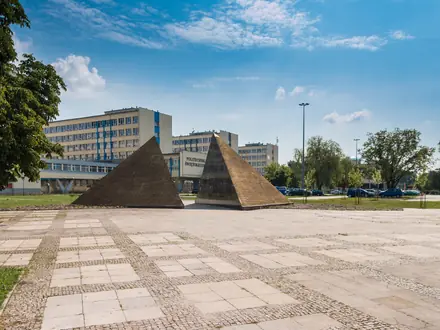
Góry Świętokrzyskie
Jesienne Góry Świętokrzyskie, 2 noclegi w hotelu 4* ze strefą wellness
- Termin
- 20-22.11.2026
- Długość
- 3 dni
- Dojazd
- autokar
1 100 zł/os.
Zapytaj o miejsca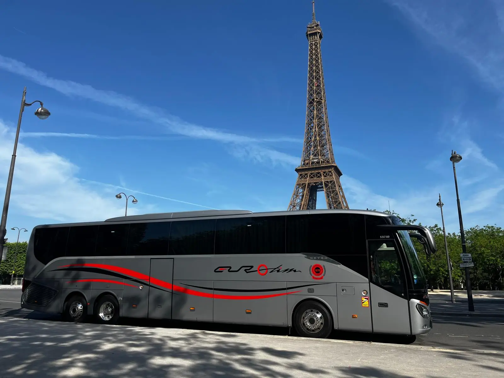
Pielgrzymki, wycieczki objazdowe i szkolne oraz wynajem autokarów. Biuro podróży EURO TIM z Bydgoszczy - z własnymi autokarami i sprawdzonymi pilotami, od 1976 roku.
Pielgrzymki autokarowe i samolotowe oraz wycieczki na najbliższe miesiące. W większości programów w cenie są przejazd, ubezpieczenie i opieka pilota.

Jesienne Góry Świętokrzyskie, 2 noclegi w hotelu 4* ze strefą wellness
Pielgrzymka śladami św. Maksymiliana Kolbego: Tokio, Kioto, Nagasaki, Akita
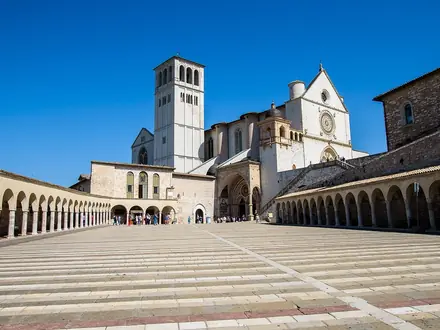
Pielgrzymka: Padwa, Asyż, Rzym i Watykan, Pompeje, San Giovanni Rotondo, Lanciano, Cascia
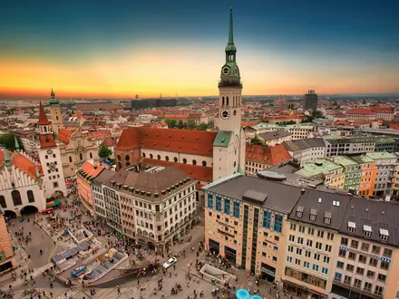
Pielgrzymka do Bawarii, 6 noclegów ze śniadaniami i obiadokolacjami
Pielgrzymka do Gietrzwałdu z wizytą na Litwie
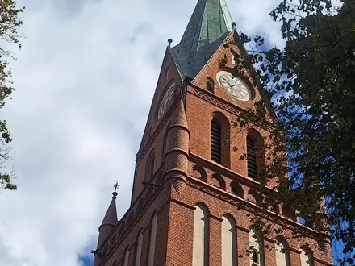
150. rocznica objawień gietrzwałdzkich - wyjazd jedno- lub dwudniowy
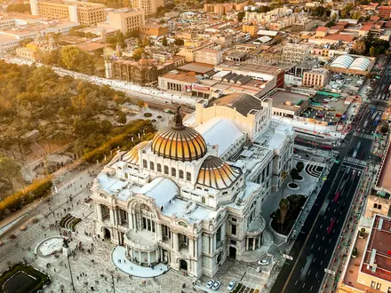
Pielgrzymka do Bazyliki Matki Bożej z Guadalupe z wizytą w Mexico City
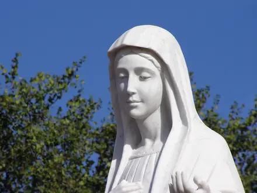
Pielgrzymka do Medjugorie, bez nocnych przejazdów
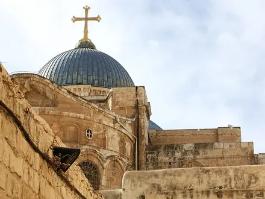
Pielgrzymka do Ziemi Świętej
Terminy i ceny z obecnej strony eurotim.com.pl, stan na 16.11.2026. Pełne programy dzień po dniu, świadczenia i dopłaty - w biurze i na podstronach wyjazdów.
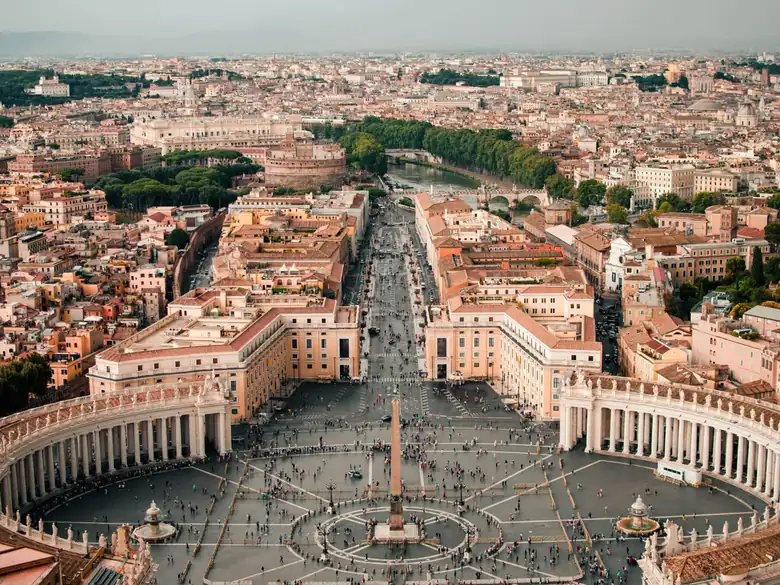
Autokarem i samolotem - do sanktuariów Europy i świata, z czasem na uroczystości religijne i na poznanie odwiedzanych krajów. Sprawdzeni piloci, opieka duchowa i własne autokary. Na życzenie grupy przyjeżdżamy na spotkanie organizacyjne i odpowiadamy na wszystkie pytania przed wyjazdem.
Polska skrywa wiele miejsc związanych z kulturą i historią - pokazujemy je z bliska. Wycieczki jednodniowe i kilkudniowe: zamki, miasta, jarmarki bożonarodzeniowe i parki rozrywki, także Berlin, Praga i Drezno.
Dla nauczycieli i wychowawców: wycieczki jednodniowe, dwudniowe i trzydniowe dla klas, z przejazdem naszym autokarem. Miasta, muzea, zamki, parki rozrywki i termy - program dobieramy do wieku uczniów.
Od 1976 roku nieprzerwanie w transporcie i turystyce. Nowoczesne, dobrze wyposażone autokary i doświadczeni kierowcy, dla których spokój pasażerów jest równie ważny jak sama trasa. Transport dobieramy do wielkości grupy.
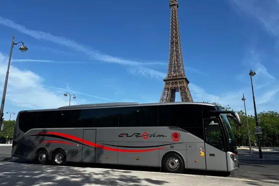
Autokar wysokopokładowy, oznaczenie S 2
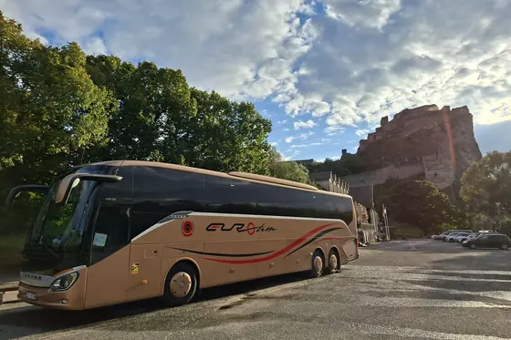
Autokar wysokopokładowy, oznaczenie S 4
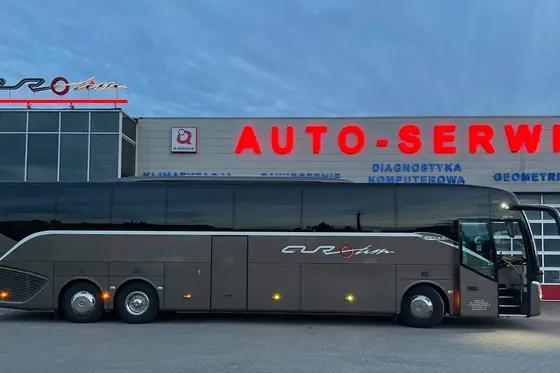
Autokar wysokopokładowy, oznaczenie S 3
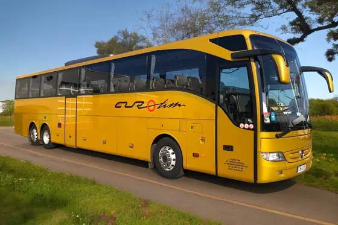
Autokar turystyczny, oznaczenie MT 1
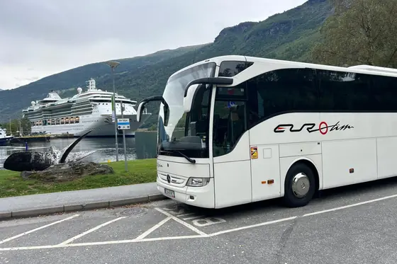
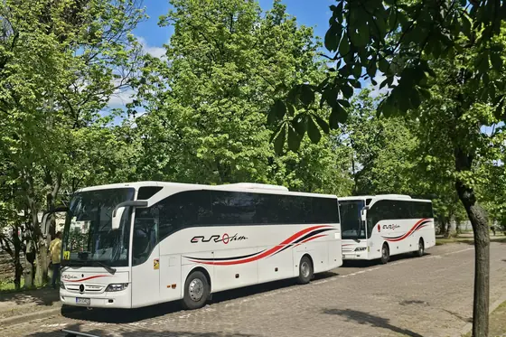
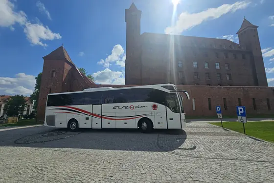
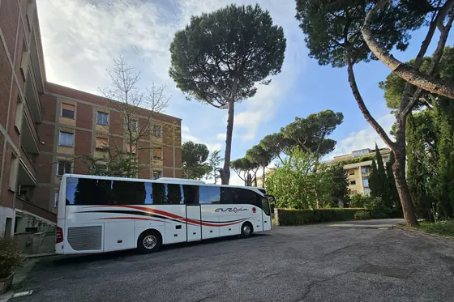
Autokar turystyczny, oznaczenie MT 6 - MT 10, 5 autokarów
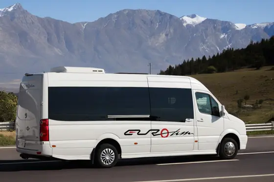
Dla mniejszych grup, oznaczenie bus
Przygotujemy propozycję dopasowaną do trasy i liczby osób. E-mail: autokary@eurotim.pl
W godzinach pracy: 52 340 41 08 wew. 024
Pilne, całą dobę: 723 188 152, 723 188 153
Tak rozwija się skrót TiM w nazwie firmy, którą w 1976 roku założył Edward Niedbalski. Przy ul. Inowrocławskiej 35 w Bydgoszczy działają biuro podróży i wynajem autokarów, a obok, niezależnie, część motoryzacyjna: hurtownia części, warsztaty, stacja kontroli pojazdów i myjnia (eurotim-moto.pl).
Organizujemy wyjazdy krajowe i zagraniczne - od pielgrzymek, przez wycieczki objazdowe i szkolne, po wyjazdy na narty. Sprzedajemy też oferty innych biur podróży, bilety autokarowe i lotnicze oraz ubezpieczenia w podróży.
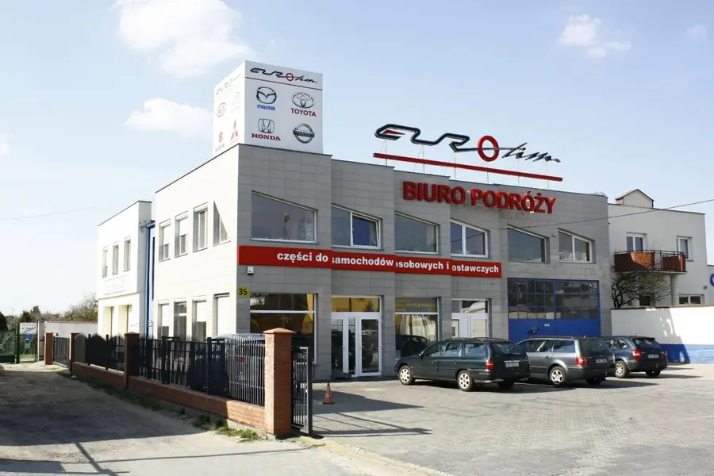
„Jako misję obraliśmy nie tylko pokazywanie piękna otaczającego nas świata jako celu podróży, ale samego podróżowania jako celu samego w sobie.”
Przy ul. Inowrocławskiej 35 pokażemy pełną dokumentację wyjazdu i ustalimy szczegóły. Można też podać telefonicznie symbol imprezy i dane - umowa będzie czekać w biurze.
Wystarczy przesłać wypełnioną Umowę-Zgłoszenie. Na podany e-mail odeślemy propozycję umowy z warunkami uczestnictwa do sprawdzenia i podpisu.
Gotówką w biurze albo przelewem. Rezerwację potwierdza otrzymanie kopii dowodu wpłaty - przy rezerwacji internetowej razem z umową na travel@eurotim.pl.
tel. 52 340 41 08, kom. 723 188 150
travel@eurotim.pl, info@eurotim.pl
tel. 52 340 41 08 wew. 024, pilne 24 h: 723 188 152, 723 188 153
autokary@eurotim.pl
ul. Inowrocławska 35/1, 85-153 Bydgoszcz